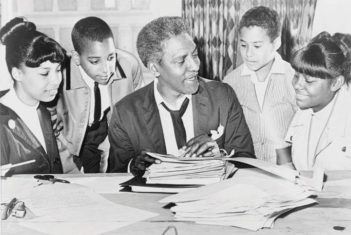
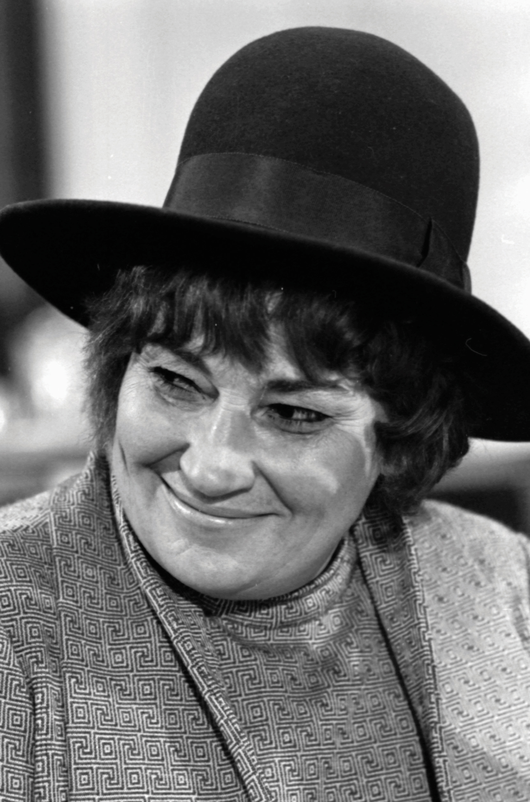
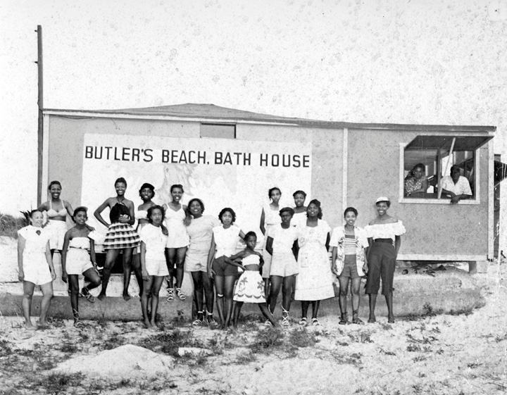
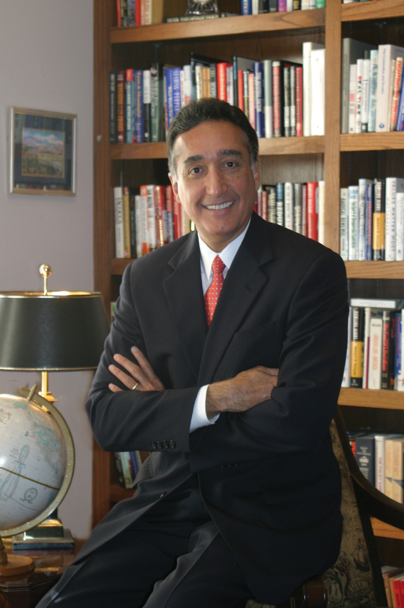

By the late 1960s, nearly every American home had at least one television and most American families spent several hours watching television programs together. Three major networks had emerged, each with local affiliates. In the 1940s and 1950s, most programs were sponsored by a single advertiser who found ways to incorporate their products into the program. By the 1960s, network programming featured commercial breaks instead of product placement. By the 1980s, cable networks utilizing satellite broadcasts disrupted the monopoly held by the major networks that continued to broadcast over the air. Cable also resulted in specialized channels meant to appeal to specific groups of consumers, such as CSPAN and ESPN, which both debuted in 1979. These specialized channels permitted marketers to more closely focus their advertisements to certain audiences. By the mid-1980s, cable television networks were receiving nearly as much advertising revenue as the major networks. A decade later, new providers launched their own satellites and offered consumers the ability to bypass the cable companies with personal satellite receivers attached to their homes.
The first computer was developed at the end of World War II and filled an entire room. Early computers cost hundreds of thousands of dollars and were designed to assist the military and businesses with record keeping and other applications involving large amounts of data. By the early 1960s, the costs of these computers had been greatly reduced while their utility increased. As a result, an estimated 12,000 computers were in use by government agencies, businesses, and universities by 1970. The development of the space program spurred new research in satellite communication, which used computer technology to send a small amount of voice and data communication around the globe.
The cost of these technologies was still so great that ordinary consumers could not purchase a computer. This situation changed with the invention of the microchipContains a large amount of electronic circuitry within a small chip, usually made of silicon. These circuits allowed the same computer technology that used to fill entire room to fit within a small box, thereby spurring the proliferation of the personal computer., which contained hundreds of circuits that had previously required lots of material and space. The microchip reduced size of a computer to the point that a machine that once filled several rooms could be reduced to the size of a desktop box. Recognizing that the microchip also reduced the cost and increased the flexibility of the machines, Steve Jobs and a few other engineers began building “personal computers.” Jobs and his partners formed the Apple Computer company in 1976 and built their first computers in his parent’s home. Before long, Apple and IBM were two of the fastest growing companies in the United States and were competing in the production of computers for consumers and businesses alike.
The same microchip technology made possible a number of other consumer products, such as the handheld calculator, the videocassette recorder (VCR), and video arcades, which became popular hangouts for youths. Other technologies led to the development of microwave ovens; these became an instant hit with US households once it was determined that the oven’s technique of heating food through radiation was safe. The Sony Walkman, a portable cassette player, made its debut in 1979 and made headphones part of the daily wardrobe of American youths in the 1980s.
Although computer networking would not spread to the general public until the mid-1990s, Department of Defense researchers in partnership with universities developed private communication networks between computers in the 1960s and 1970s. These networks quickly expanded beyond government and academia. The communications protocols became standardized in 1982 and the network of networks known as the Internet was born. By the end of the decade, the Internet had also given birth to a new application of technology. Computer programmers designed a network of interlinked hypertext web pages that hosted data, images, and eventually video and sound through a network called the World Wide Web.
Just as communications were bringing people across the globe together, new technology led to cooperative agreements between researchers in the United States and the Soviet Union. Both nations had dreams of launching a satellite so massive it could host a habitable research facility. The costs and logistical challenges of such a massive venture inspired cooperation between the two nations, leading to the creation of the International Space Station. The first component of the station was launched in 1998. This station and its laboratories have subsequently grown through a series of modular additions through a multinational cooperative effort. The station remains the largest technological joint venture between nations and has been continuously habituated by scientists from around the globe since 2000.
The popular culture of the 1980s is infamous for celebrating material affluence. Although the characters in television shows like Dynasty, Dallas, and Lifestyles of the Rich and Famous reveled in conspicuous consumption, the 1980s also saw unprecedented displays of generosity. Corporate and personal donations to charities became commonplace, while the majority of Americans donated to relieve the suffering of flood and famine victims around the globe. For example, a famine in Ethiopia during the mid-1980s inspired a collaborative effort of dozens of celebrities and musicians from Willie Nelson to Michael Jackson who recorded an album and performed in concerts that raised $100 million for famine relief.
Charity was especially needed at home as the gap between the rich and the poor grew and homelessness became an epidemic. While the average salary for a corporate executive was forty times that of a factory worker during the late 1970s, by the end of the 1980s, the leading CEOs made a hundred times more money than their entry-level employees. Adjusted for inflation, the poorest 20 percent of Americans made less money than they had in previous decades. One million Americans lived on the streets, many of them still working at least one job. Although minimum wage had increased incrementally during the 1970s, the pay rate stood unchanged at $3.35/hour throughout the Reagan administration. As a result, a full-time worker made only $134 per week before taxes—an amount that meant a husband and wife working full time with no sick days or vacation lived right at the federal poverty level for a family of four. Twenty percent of children and nearly 50 percent of minority children lived below that level.
The affluent culture of the 1980s and new methods of marketing products meant that these children were frequently reminded of their poverty. By the 1980s, children were not only subjected to television advertisements during popular cartoons; popular cartoons were advertisements themselves. Millions of children tuned in to watch My Little Ponies, Care Bears, He-Man, and G.I. Joe each week. Each of these programs and dozens of others were based around preexisting toy lines, thus eliminating what had previously been a blurred line between programming and marketing.
An organization known as Mothers Against Drunk Driving (MADD) emerged to raise awareness about another threat to the welfare of America’s youths: intoxicated drivers. MADD lobbied Congress in support of the National Minimum Drinking Age Act of 1984Required states to lower their minimum drinking age to twenty-one or forfeit a significant amount of federal highway funds., a law that required states to raise their drinking age to twenty-one or face a 10 percent reduction in federal highway funds. The Twenty-First Amendment that had ended prohibition placed the authority to regulate alcohol on the states. As a result, there have often been some differences in interpretation and enforcement of the minimum drinking age from state to state. Some critics of the 1984 law suggest that these state laws actually discourage responsible alcohol consumption among youths. While MADD and other conservatives disagree, some believe that foreign nations with more liberal alcohol laws actually promote more responsible attitudes regarding alcohol. By this perspective, young adults in Europe and Latin America usually enjoy their first drinks in the company of their parents and are thus less likely to hide their alcohol consumption or binge drink once they leave the home.
Figure 13.12
First Lady Nancy Reagan speaks at a rally encouraging youths to “Just Say No” to drugs. The Reagan administration was heavily criticized in later years for its connections to some of the most notorious drug smugglers during the Iran-Contra Affair.
The conservatism of the decade also inspired efforts to combat illegal drugs. “Crack” was a form of cocaine that was introduced in the 1980s and proved more profitable to drug dealers, even if it was even more addictive and harmful to users than the drug’s powder form. The Anti-Drug Abuse Act of 1986 targeted crack dealers, enacting minimum sentencing guidelines that were determined by the amount and type of drug a person possessed when caught. For example, an individual with five grams of crack cocaine would be sentenced to at least five years in federal prison. The sentencing guidelines for crack cocaine were a hundred times more severe than those regarding the powder form of cocaine—a drug that was more likely to be used by middle- and upper-class drug abusers. For example, a person caught with powder cocaine would have to have 500 grams to receive the same sentence as someone with five grams of crack.
Many considered the law to be racially biased against minorities and the poor who were far more likely to be caught with crack cocaine. Defenders of the law suggested that the lower tolerance for crack was justified because of the higher correlation between that form of the drug and addiction, birth defects, and violent crime. Critics of the Reagan administration questioned the effectiveness of the president’s “War on Drugs” because it coincided with drastic reductions to antipoverty and job training programs. By this perspective, no amount of law enforcement could prevent young people from dealing drugs if this appeared to be the only way out of poverty. Still others pointed to the fact that individuals like Manuel Noriega had been on the CIA payroll despite his connections to Pablo Escobar and the Medellín Cartel. For these individuals, the covert actions of the Reagan administration in Latin America was evidence that the federal government was not really committed to preventing drugs from entering the country.
In 1983, the state of New York outlawed discrimination against homosexuals. Three years later, New York City became one of the first major cities to pass legislation that included sexual orientation as a category within its nondiscrimination laws. Among those who testified on behalf of New York City’s gay rights bill was the civil rights veteran Bayard Rustin. Rustin had been Martin Luther King Jr.’s most trusted adviser and was a leading organizer of the 1963 March on Washington. However, because of his sexual orientation, few within the movement supported Rustin as a candidate for a leadership position. He was even forced to resign from the Southern Christian Leadership Conference (SCLC) because he was gay.
Figure 13.13
Although he was forced into silence on the subject of his own homosexuality during the 1960s, civil rights activist Bayard Rustin became a leading proponent of gay rights in the 1980s.
At times, some civil rights leaders even threatened to publicly “out” Rustin. Ironically, Rustin had always been honest about his homosexuality and had agreed to silence regarding his personal life to appease these same civil rights leaders who were concerned that Rustin’s sexual orientation would be used by the opponents of the movement. By the early 1980s, however, Rustin was free to speak more openly about the issue of gay rights. He published several candid essays that compared the persecution of African Americans in the 1950s to the contemporary persecution of homosexuals. Despite Rustin’s commitment, historians of the civil rights movement generally tread delicately when discussing the issue of homosexuality. For example, most books written on the civil rights movement before the 1990s exclude Rustin’s sexual orientation. Rustin’s papers were published shortly after his death in 1987. Even though there are dozens of instances where Rustin discussed the subject of homosexuality, there is seldom more than a passing mention of gender orientation in pages written by historians describing Rustin’s life.
American physicians became aware of a new virus in 1981 whose symptoms first appeared in a number of gay men. The virus attacked and eventually destroyed the body’s ability to fight infection, resulting in fatal diseases that neither the body nor modern medicine could counteract. Researchers quickly determined that sexual orientation had nothing to do with the virus itself and rejected the informal labels given to the disease such as “gay-related immunodeficiency disease.” Even if labels such as these were short lived, the casual association between human immunodeficiency virus (HIV) and homosexuality continued in the minds of most Americans for an entire decade.
Given the antigay climate of the 1980s, the association of HIV and homosexuality led many to disregard the seriousness of the virus and acquired immunodeficiency deficiency syndrome (AIDS)A disease resulting from the HIV virus, AIDS destroys the immune system’s ability to combat illness and has led to an estimated 25 million fatalities worldwide., the disease that resulted from HIV. Reagan made no public mention of HIV or AIDS until 1985 and refused to support education or research efforts until political pressure in the late 1980s forced him to reconsider. Many community leaders likewise avoided any mention of the disease. The result was ignorance and misinformation about how HIV was contracted and spread. A small number of religious figures with large television and radio audiences added to the cacophony of miseducation by declaring that AIDS was God’s way of punishing homosexuals. With almost no federally supported research into ways to counteract the disease or public education programs, nearly 100,000 Americans lost their lives to AIDS in the 1980s.
One of the reasons for America’s eventual acknowledgment of AIDS and belated efforts to counter the misinformation about the disease was the tragic experience of a young man named Ryan WhiteA young man who contracted the HIV virus during a blood transfusion at age thirteen, Ryan White was castigated by many who did not understand his disease. His life story captured the attention of the nation and led to greater understanding of the way the HIV virus was spread and how it could be prevented, as well as greater compassion for those with HIV and AIDS.. White contracted HIV when he received blood containing the virus during a transfusion—itself a direct result of the failure to spread information about the disease. White was diagnosed with AIDS on December 17, 1984. He was thirteen. Although everyone in the medical field assured community members that his disease could not be spread by casual contact, the misinformation regarding the disease resulted in community-wide outrage when White was readmitted to his school in Kokomo, Indiana. White’s family was forced to agree to community demands, including the requirement that Ryan be assigned to a separate restroom and use disposable plates and plastic eating utensils in the cafeteria.
“Because of the lack of education on AIDS, discrimination, fear, panic, and lies surrounded me,” White later explained to members of Congress during a hearing on AIDS education. “Some restaurants threw away my dishes…my school locker was vandalized inside and folders were marked FAG and other obscenities…I was not welcome anywhere. People would get up and leave so they would not have to sit anywhere near me. Even at church, people would not shake my hand.” By the time White entered high school, AIDS awareness had improved and the student body president worked with area health professionals to assure that parents and students understood AIDS. Although White died in 1990, the change in public education allowed him to enjoy some moments of normal adolescence, such as having a part-time job, learning to drive, and attending the prom.
Figure 13.14
New York congresswoman Bella Abzug became the first Jewish woman in Congress in 1970. She graduated from Hunter College in New York and worked as an attorney before becoming a politician and women’s activist.
The conservative tenor of the 1980s led to the creation of a political climate in which fewer women overtly identified themselves as feminists. Some women expressed concerns that the feminist movement had inadvertently produced a stigma affecting women who chose not to pursue careers outside the home. Others believed that the feminist movement had helped to eliminate historic injustices but was no longer needed. Lastly, conservative commentators masquerading as scholars produced “studies” on the misery of feminists who discovered the error of their ways. As single women passed the age of forty, these questionable reports suggested, their chances of marriage were statistically lower than being killed by a terrorist.
While women continued to disagree about the relevance of the feminist movement and what objectives may still need to be reached, there was still widespread agreement that the movement had left a positive legacy that advanced the lives of women. The movement also retained its appeal with minority women, according to a 1989 poll that found 72 percent of Hispanic women and 85 percent of black women approved of the goals of the women’s movement, compared with 64 percent of white women.
Gloria Steinem and civil rights veteran Myrlie Evers were among many of the supporters of the National Women’s Political Caucus (NWPC)A nonpartisan organization that seeks to increase the level participation of women within the political system as candidates and voters., which grew exponentially during the 1980s. New York congresswoman and NWPC founder Bella Abzug quipped that a woman’s place was “in the house—the House of Representatives.” In this spirit, the NWPC operated as a nonpartisan organization that supported women who desired to run for political office. The organization assisted US congresswomen as well as local officeholders and continues to operate as a support network and information clearinghouse. The success of the NWPC and women everywhere demonstrated that others agreed with Steinem, Evers, and Abzug. Women represented just over three 3 of elected officials in late 1960s, but this number grew to over 20 percent in next three decades.
Women also held important posts within the federal bureaucracy, such as Eleanor Holmes NortonA law professor and civil rights veteran who led the Equal Employment Opportunity Commission before her removal by Ronald Reagan. Norton presently represents the District of Columbia in Congress and has led the fight for full congressional voting representation for the residents of that district, who are presently not represented by a member in Congress who can vote on legislation. who headed the Equal Employment Opportunity Commission (EEOC). An attorney and veteran of the civil rights movement, Norton aggressively sought to implement the mission of the EEOC as it related to women and minorities. Under her administration, the EEOC streamlined its operations so it could more effectively pursue organizations that had shown a pattern of discrimination against women and minorities. For example, the EEOC implemented timetables by which violators of the law must demonstrate that they had taken corrective action. Violators were also compelled to meet agreed-on minimum quotas regarding the employment of the groups they had discriminated against in the past. In addition, the EEOC under Norton established guidelines relating to affirmative action and defined sexual harassment as both a form of discrimination and a violation of an individual’s civil rights.
Many of these actions upset conservatives, who believed the EEOC was violating the rights of employers and discriminating against white males. As a result, Ronald Reagan fired Norton shortly after taking office in 1981, replacing her with the conservative Clarence Thomas. Thomas immediately abandoned requirements that federal employers meet certain benchmarks regarding equality in recruitment and employment. In addition, Reagan’s cuts to the EEOC meant that a majority of complaints from women and minorities were never investigated.
The attack on the EEOC was particularly troubling as the gap between wealthy and poor women expanded even faster than the general gulf between the rich and the poor. A handful of prominent women made headlines as corporate executives, and the number of women in the professions doubled and then doubled again between the 1960s and the 1980s. These advances masked the reality of life for most female wage earners, the majority of whom were still restricted to a handful of low-paying occupations. More than 80 percent of female laborers were employed within one of twenty occupations out of nearly five hundred different careers listed by the US Census Bureau. Most of these women worked in low-paying service and clerical work. In fact, scholars have demonstrated that if men and women were to be equally represented throughout each occupation, over 50 percent of all employees would have to switch jobs.
Even those women who had jobs in higher-paying occupations such as sales were grouped in hourly work rather than positions where commissions were offered. Old attitudes that suggested that assigning men and women to different tasks was “natural” continued. Employers often defended their hiring practices by explaining that women “did not like competition” or could not understand the products their male staff peddled.
Although women have historically been relegated to the lowest-paid jobs, the consequences of this disparity have increased the suffering of women and children as divorce rates and the numbers of single mothers doubled between 1960 and 1980. The continued inequality of the workplace combined with the increase in female-headed households has led to a phenomenon known as the feminization of povertyRefers to the increase in the number and percentage of women among the nation’s poor. The phenomenon is usually associated to the rising number of female-headed households and the increased tendency for these single mothers and their children to fall below the poverty line.. During the 1980s, roughly half of single mothers who were employed received salaries that were below the poverty level. The statistics were especially troubling for minority women and those in isolated rural areas where nearly half of all women of childbearing age were single mothers.
The late twentieth century saw a slight increase the number of black Americans joining the ranks of the middle class—a positive legacy of the civil rights movement and policies such as affirmative action. However, the 1980s was also host to a retreat in terms of support for affirmative action. The decade also saw an organized assault on urban black communities through ghettoization, drastic reductions in federal grants for community programs, the loss of jobs, and the introduction of crack cocaine.
The expansion of chain stores into primarily black neighborhoods—a sign of the recognition of black consumer power made possible by the civil rights movement—also displaced thousands of black-owned businesses. Prior to integration, black-owned business received nearly a quarter of all money spent by black consumers. During the 1970s, the proportion of money spent by black consumers at black-owned businesses declined by 50 percent. By the mid-1990s, only 3 percent of African American purchases were from black-owned enterprises. Thousands of independent black hotels, movie theaters, restaurants, and merchandisers that had served black customers with dignity during the era of segregation had closed their doors by this time. Although the decline of independent black business was part of a national trend that saw family-owned businesses displaced by retail chain stores, the effect on the black community was particularly damaging because black entrepreneurs had reinvested in the community and provided jobs. Even black-owned beauty companies, a multimillion-dollar industry that had created tens of thousands of jobs, imploded during the 1970s. Prior to this time, cosmetic makers ignored the black consumer. By the 1980s, three-fourths of black expenditures on health and beauty products went to publicly traded or white-owned businesses.
Figure 13.15
Despite the triumph over Jim Crow, integration also coincided with a decline in the number of black-owned businesses. Florida’s Frank Butler owned a number of establishments such as this bathhouse near St. Augustine. Ironically, this photo was also taken at a time when this was the only beach between Jacksonville and Daytona that African Americans could use.
The deindustrialization of America was even more distressing as unions and factories were opening their doors to black men and women in significant numbers. As factories closed, fewer and fewer black men could find jobs that paid a family wage. Marriage rates declined but birth rates continued much as they had in the past. The result was that 47 percent of black families were headed by single mothers by the end of the 1980s. Without factory labor in America’s cities and with the decline of black-owned businesses, most of the jobs available near black communities were in the service sector. Job training programs and college offered one escape from the cycle of poverty, but federal and state agencies eliminated job training and inner-city high schools had fewer resources to produce students that were prepared for college. In addition, community reinvestment programs and federal aid for urban areas were also reduced or eliminated. For those inside America’s inner cities, the only major federal programs that were not reduced were prisons and highway funding, both of which added to the impoverishment of urban communities.
Reagan began his campaign for president with an appearance in Philadelphia, Mississippi. This was no ordinary small town in America. Philadelphia, Mississippi, was the sight of the infamous murder of three civil rights workers in 1964. Reagan was not there to remember the courage of these young people or pay tribute to the cause for which they gave their lives. Instead, Reagan stood next to archsegregationist Strom Thurmond and repeatedly used the phrase “state’s rights”—a phrase that had been a code word for white supremacy for over a century. Reagan’s white supporters in the 1980s and beyond maintain that Reagan was simply expressing his support for the devolution of government authority from the federal level to the states. African Americans interpreted Reagan’s message differently and pointed out that Reagan spent the majority of his presidency expanding the power of the federal government.
As president, Reagan was frequently criticized for marginalizing the perspectives of African Americans. He frequently projected images of black women as “welfare queens” while mistaking the only black appointee to his cabinet as a White House guest. Reagan also fired prominent black leaders such as civil rights veteran Eleanor Holmes Norton from the EEOC. Reagan attempted to fire Civil Rights Commissioner Mary Frances Berry until she challenged the president’s decision in federal court and was restored to her post. Although Reagan signed the bill creating a national holiday to honor Martin Luther King Jr., the president did little to support the bill and expressed his belief that observation of the holiday should not be required. He also agreed to speak at a Southern evangelical college that banned black students from its dances during his tenure in office without any acknowledgment of the college’s ongoing racial discrimination.
Although the Reagan administration made few efforts to address the subject of South African apartheid, Norton, Barry, and other black leaders joined with the tens of thousands of college students in demanding an end to the racial caste system. These women and thousands of college students waged sit-ins and were voluntarily arrested at the South African embassy in Washington, DC, as part of the antiapartheid movement. By 1986, black and white students and activists held dozens of protests that culminated in the introduction of the Anti-Apartheid Act of 1986, which demanded an end to apartheid and required federal divestment from the South Africa until such an objective was met. The bill passed Congress but was vetoed by Reagan. The coalition of black leaders like Coretta Scott King, black community members, and college students of all backgrounds rallied once again and even convinced a number of conservative republicans to reverse their votes and override Reagan’s veto.
One of the most significant cultural movements of the 1980s was the emergence and spread of hip-hop or “rap” music from inner cities to small towns. Hip hop arose from self-taught street musicians that combined elements of 1970s funk with beats and lyrics. Artists such as the Last Poets and Gil Scott Heron spoke to the experience of inner-city life in a way that appealed to many outside of the ghettos because of their honesty and intensity. Others used the medium for self-promotion, composing rhymes and beats paired with brash lyrics and posturing bravado. Others such as Chuck D of Public Enemy demonstrated the power of the medium with songs such as “Fight the Power” that counseled listeners to aggressively confront racism.
Other black artists such as filmmaker Spike Lee combined rap lyrics throughout his 1989 cinematic masterpiece Do the Right Thing, a two-hour tour de force that deconstructed the anatomy of a race riot and started a national dialogue about racial prejudice. Many white politicians tried to seize that dialogue, criticizing Public Enemy and other artists instead of the white-owned record companies that hijacked the medium by signing only those rappers wiling to glorify violence and demean women. It was these images of black “thugs and pimps,” combined with the buffoonery of previous decades, that typified the media image of black America during the 1980s. “The image of Black people on the tube has not drastically changed over the decades,” Chuck D explained in a recent book. “We’re either singing, dancing, telling jokes, telling one-liners in a sitcom, talking about a triple-double, touchdown, or stolen base, or getting locked up in a squad car on Cops…there’s only a few serious Black roles on TV.”
In 1980, Jimmy Carter signed the 1980 Refugee Act. The statute reformed US laws regarding immigration in a way that allowed quotas to be adjusted annually to provide more flexibility regarding refugees. The 1980 law also adopted the United Nation’s definition of the term refugee as anyone with a “well-founded fear of persecution” based on politics, religion, race or nationality. The 1980 law added an important stipulation. It barred any individual who had participated in the persecution of others from being considered a refugee themselves.
In the past, individuals applying for asylum in the US were evaluated based on Cold War politics rather than the individual circumstances they faced. For example, a person seeking to leave the right-wing dictatorship of El Salvador in the 1980s would be denied entry into the US because the US maintained formal relations with the Salvadoran government. If a person wished to leave Nicaragua, a neighboring leftist government the US was covertly seeking to topple during the 1980s, they would likely be welcomed. Because their desire to flee from Communist oppression could be used as political capital, people in Communist nations were almost automatically granted asylum. In October 1980, more than 100,000 refugees arrived in the US from Cuba. These individuals were among the estimated 1 million Cuban refugees who were resettled in the United States during the 1980s. Meanwhile, an estimated 10,000 refugees fleeing the militaristic regime of El Salvador were able to enter the US only by walking hundreds of miles and illegally crossing the Rio Grande. Many Salvadorans liken the northbound path of these refugees to that of escaped slaves who illegally crossed the Ohio River and followed the Underground Railroad a century before.
These Salvadorans were among the several million illegal immigrants who arrived in the US during the 1980s. Another 8 million immigrants legally entered the nation between 1975 and 1990. The issue of both legal and illegal immigration continued to spark controversy among Americans. It also revealed division among Hispanics, a term used to describe Americans whose ancestral home was one of the many Spanish-speaking nations in Latin America. Researchers at the University of Texas-Pan American determined that Mexican Americans who had lived in the United States for a number of years generally favored stricter immigration laws. They also found that middle-class Hispanics were more likely to believe that illegal immigration was harmful to US communities than other Hispanics. Some members of these groups joined the growing chorus of predominantly white Americans that called for tougher immigration laws. Employers typically opposed these restrictions, recognizing that the majority of the nation’s new immigrants had been skilled workers in their countries of origin.
In the past, undocumented immigrants had been tolerated and even welcomed by many Americans due to the tremendous demand for agricultural and industrial laborers. However, the devaluation of the Mexican currency in the 1980s led to a tremendous surge in the number of undocumented immigrants. Congress responded with the passage of the Immigration Reform and Control Act of 1986A law designed to discourage illegal immigration by making it a crime to knowingly hire anyone who was not legally permitted to live and work in the United States. The law also granted amnesty to all illegal residents who arrived in the United States before January 1, 1982.. The new law required employers to take steps to verify and record the identity of all employees and make sure that each employee was legally entitled to reside and work in the United States. In addition to introducing the I-9 form that all employees must presently complete, the law also introduced fines for employers that knowingly hired undocumented aliens.
The 1986 law also created a guest-worker program and provided amnesty for those who could prove that they had resided in the country for at least five years and were willing to attend federally funded courses in English and US history. The law represented a compromise between numerous interests. As a result, it was criticized by groups representing multiple perspectives on the immigration debate. Hispanic leaders documented the way that the new law was unequally applied to nonwhite immigrants. These groups also believed that the US Border Patrol was beginning to act more like a paramilitary force. Others thought the law did not do enough, citing the ability of the agribusiness lobby to provide an exception for field workers. They were also angered that corporate interests had lobbied for the removal of a provision that would have required employers to determine the validity of a potential employee’s identification documents. Without this provision, critics argued, employers could legally hire individuals who provided documents that were obvious counterfeits. Proponents of the law had hoped that it would deter illegal immigration by barring employment for undocumented aliens. Absent stricter regulations for employers, illegal immigration continued to be one of the leading issues of the 1980s and beyond.
Figure 13.16
San Antonio mayor Henry Cisneros became the second Hispanic mayor of a major US city in 1981. Alfonso Cervantes was elected mayor of St. Louis in 1965.
The Hispanic population of the United States increased to 7 percent of the US population in the 1980s. The total number of Hispanics increased from about 14 million to nearly 20 million and the collective buying power of these individuals represented over $170 billion by the end of the decade. As a result, Hispanic consumer power and the Hispanic vote became increasingly important. For example, a decade-long boycott of Coors resulted in an agreement to hire a certain minimum number of Hispanic workers among Colorado’s growing Hispanic population.
Hispanic voters represented 8 percent of registered voters in Texas in 1986, a number that was steadily increasing and would reach 20 percent by 2011. In the mid-1980s, almost half of the nation’s 3,000 elected officials of Hispanic origins were from Texas. These political victories were the result of voter registration drives that were made possible by dozens of court challenges in the late 1970s and early 1980s. In these years, the Hispanic vote was often diluted by at-large electoral schemes and gerrymandered districts that prevented Hispanic candidates from winning elections, even in communities with large Hispanic populations. Organizations such as the Mexican American Legal Defense and Education Fund (MALDEF) in the Southwest and the Puerto Rican Legal Defense Fund in Florida and New York demonstrated that these schemes were intended to assure that Anglo candidates continued to win elections and therefore violated the Voting Rights Act of 1965.
A number of Hispanic candidates that were elected as a consequence of court-ordered electoral redistricting would later win the support of Anglos and other groups and win citywide offices. For example, San Antonio elected its first Hispanic mayor since the 1840s when former University of Texas at San Antonio professor Henry Cisneros took office in 1981. Denver also elected a Latino mayor in the 1980s, and New Mexico and Florida voters selected Hispanic governors during these years as well.
Fourteen percent of all public school children dropped out of school in the 1980s. The rate was extremely high among minority students, with 19 percent of black students and over a third of Hispanic students dropping out of school during these same years. Numerous studies suggested that the trend of academic underachievement among non-English speakers could be mitigated through the introduction of bilingual education programs. This was especially true in the lower grades and had been shown to ease the transition into American public schools for children in non-English-speaking homes. However, bilingual education programs were also expensive, and many districts that might benefit from such programs were in low-income areas that relied on a dwindling supply of grants. The limited federal funds for these programs were sharply curtailed during the Reagan administration to the point that only 3 percent of Hispanic children had access to bilingual programs.
One of the justifications for these cuts was the perception that bilingual education might spread from the elementary schools to society at large, discouraging immigrants from learning English and causing the “Quebecization” of the United States. Fears that English and Spanish might become ubiquitous throughout America just as French and English coexist in eastern Canada led to several failed attempts to prohibit languages other than English. It also inspired a failed Constitutional amendment that would have recognized English as the official language of the United States. Over a dozen states passed symbolic legislation to this effect in the following decade. Residents of New Mexico countered this trend in 1989 by passing their own symbolic resolution: “supporting language rights in the United States.” Due to a much stronger appreciation for its Spanish heritage, the voters of New Mexico approved a statement recommending all citizens learn English and another language. The nonbinding resolution included a phrase celebrating proficiency in multiple languages as providing both cultural and economic benefits to citizens and the state.